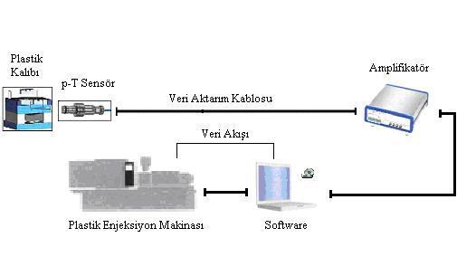
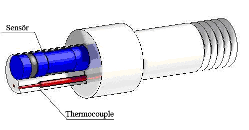

|
Þubat 2006, Ýstanbul
Not: Orijinal olarak TurkCADCAM.net Dergisi 2. sayýsý için hazýrlanan bu makale, Haziran 2006'da EMO-Makine Market Dergisi'nde, Eylül 2007'de ise TurkCADCAM.net Portalýnda yayýnlanmýþtýr.
1. Giriþ
Günümüzde birçok sektörde kullanýlan plastik parçalarýn imal edilmesi diðer malzemelerden yapýlmýþ parçalarýn imal edilmesine göre daha ucuz, daha hýzlý ve daha kolay olmasýna raðmen ürün çeþitli yönlerden deðerlendirildiðinde her zaman ayný kararlýlýkta olmadýðý gözlenmektedir. Plastik parça imalatýnda ölçü standartlýðý, estetik ve kalite yönünden kararlý bir üretimin saðlanmasý kolay ve her zaman mümkün olamamaktadýr. Plastik parça üretiminde kararsýz parça yapýsýna sahip üretimin; yani her üretimde ayný özellik ve ölçülere sahip parça üretilememesinin birçok olumsuz etkileri zaman zaman çeþitli mühendislik uygulamalarýnda görülebilir.
Deneme üretiminde kalite kontrol uzmanlarýnýn üretimin devamý için onayladýðý enjeksiyon makinasýnýn baský deðerlerinin (enjeksiyon basma basýncý, mengene kapama basýncý, ütüleme basýncý, soðuma zamaný, enjeksiyon ocak sýcaklýklarý, kalýp sýcaklýðý vb.) her zaman kararlý bir parça üretimi için yeterli olmadýðý bilinmektedir. Çalýþma esnasýnda bu deðerlerin çeþitli etkilerden dolayý deðiþtiðinde ürünün kalitesine olumsuz etkilerde bulunduðu uygulamada görülmektedir. [1]
Bu çalýþmada, deneme üretiminde elde edilen optimum baský deðerlerinin baský esnasýnda sensörler (algýlayýcý) yardýmýyla ölçülerek denetiminin nasýl yapýlabileceði ve standart üretim kalitesine katkýlarý incelenmektedir.
2. Plastik enjeksiyon kalýplarýnda meydana gelen problemler
Bir plastik diþli üretiminde her zaman ölçülerin ayný olmasý istenir, fakat gerek hammadde akýþkanlýðýnýn deðiþmesi, makine fonksiyonlarýnýn farklýlaþmasý gerekse enjeksiyon baskýsýnýn ve sýcaklýklarýnýn deðiþimlerinden dolayý böyle hassas bir parça her zaman ayný kararlýlýkta (estetik, ölçüsel veya fonksiyonel olarak) imal edilemeyebilirler. Plastik hammadde, plastik kalýbý ve enjeksiyon makinesi arasýnda bulunan iliþkiden dolayý bunlar gibi birçok problemler meydana gelmektedir.
2.1. Estetik Problemler
- Kalýp boþluklarýnýn tam doldurulamamasý, dolayýsýyla eksik baský çýkmasý
- Kalýbýn fazla mal almasý ve çapak oluþmasý
- Üründe oluþan çöküntü gibi estetik ve fonksiyonel bozukluklar
- Üründe oluþan soðuk birleþme izleri
- Üründe parçasýnda oluþan gaz izi, yüzeyde akýþ lekeleri
2.2. Ölçüsel Problemler
- Ölçü stabilitesinin saðlanamamasý,
- Parçanýn aþýrý çekmesi (büzülmesi),
- Plastik parçanýn ölçü toleranslarý dýþýna çýkma problemleri.
- Parçanýn az çekmesi (büzülmesi den dolayý) [2]
2.2. Fonksiyonel Problemler (Baskýda oluþan problemler)
Çok gözlü kalýplarda her kalýp gözünün gerek estetik, gerek fonksiyonel gerekse ölçüsel olarak birbirlerinden farklýlýk göstermeleri, ürün kalitesine etki eder. Ayný zamanda hava þartlarý, hammaddenin özelliklerinin farklýlýðý (nem, sýcaklýk), operatör özellikleri (deðiþiklikleri), helezon aþýnmasý, voltaj düþmesi ile oluþan ýsý deðiþiklikleri ve basýnç farklýlýklarý bu farklýlaþmaya büyük etkenlerdir.
Dolayýsýyla kalýbýn her kullanýmýndaki enjeksiyon makinesinin elektronik kumanda panelindeki set edilmiþ deðerlerinin ayný olmasý kalýptan çýkan plastik parçalarýn estetik, ölçüsel ve fonksiyonel farklýlýk göstermesini engelleyememektedir.
3. Plastik enjeksiyon kalýplarýnda ürün kalitesinin kararlýlýðýný saðlayabilmek için piezoelektrik sensörlerin kullanýlmasý
Plastik parçalarýn imalatý esnasýndaki bu tür problemlerin ortadan kaldýrýlmasý için günümüzde çeþitli iyileþtirme yöntemleri kullanýlmaktadýr. Bu sebeplerden ötürü plastik kalýbýnýn her baskýsýnda ortaya çýkan parça veya parçalarýn ölçüsel, estetik ve fonksiyonel özelliklerinin ayný seviyede tutulabilmesi ve kararlý bir baskýya sahip olabilmesi için plastik kalýplarýnýn enjeksiyon makinasýnda optimum çalýþma þartlarýnýn çok hassas bir þekilde saðlanmasý gerekir.
Parçanýn kalite parametreleri belirlendikten sonra bu parametrelerin (basýnç, sýcaklýk ve zaman) operatörün inisiyatifinden alýnarak, her baskýda da tek tek ve her bir kalýp gözü için, göz içerisinden hassas bir þekilde ölçülüp, bilgisayar yazýlýmýyla diyagramlarý elde edilir. Bu deðerler istenen seviyede tutularak standart üretimin elde edilmesi saðlanmalýdýr.
Plastik enjeksiyon kalýplarýnda bu optimizasyonun saðlanabilmesi kalýbýn gözüne veya gözlerine yerleþtirilen piezo elektrik sistemi ile çalýþan basýnç sensörleri ve sýcaklýk ölçümünde kullanýlan "thermocouple"lardan faydalanýlýr. [3]


Þekil 1. Basýnç-Sýcaklýk Ölçüm Sensörü Kesiti
3.1. Kalýp Gözlerinde Kullanýlan Sensörler
Basýnç ü ve "thermocouple"larýn bir arada veya tek tek kalýp gözlerine ayrý ayrý yerleþtirildikten sonra eriyik plastik malzemenin kalýp gözüne veya gözlerine yapmýþ olduðu basýnç ve malzeme sýcaklýklarýný basýnç sensörü ve "thermocouple"larla ölçerek bu ölçüm deðerleri amplifikatöre bir iletici kablo yardýmýyla iletilir. [4]
Sýcaklýk ve basýnç deðerleri amplifikatör tarafýndan birbirlerinden ayrýþtýrýlarak yine ayný amplifikatör yardýmý ile küçük sinyaller iþlenebilecek büyük sinyallere yükseltilerek bir veri dönüþtürücüye (data converter) iletilir.
Bu veri dönüþtürücüden (data converter) çýkan veriler özel olarak hazýrlanmýþ bir bir yazýlýmla bilgisayara ve oradan da enjeksiyon makinasýnýn elektronik kumanda paneline bir iletici kablo ile taþýnýr. Bilgisayardan istenildiði zaman bu veriler grafikler þeklinde görüntülenebildiði ve saklanabildiði gibi istenildiðinde de bir yazýcýdan çýkýþ alýnabilir. [5]
Bilgisayar ortamýnda elde edilen bu veriler ve grafikler, üretici firma tarafýndan yazýlmýþ bilgisayar yardýmý ile parametrik olarak bütün makina deðerlerine bu bulunan sonuçlara göre müdahale etmemize olanak saðlar. [6]
|